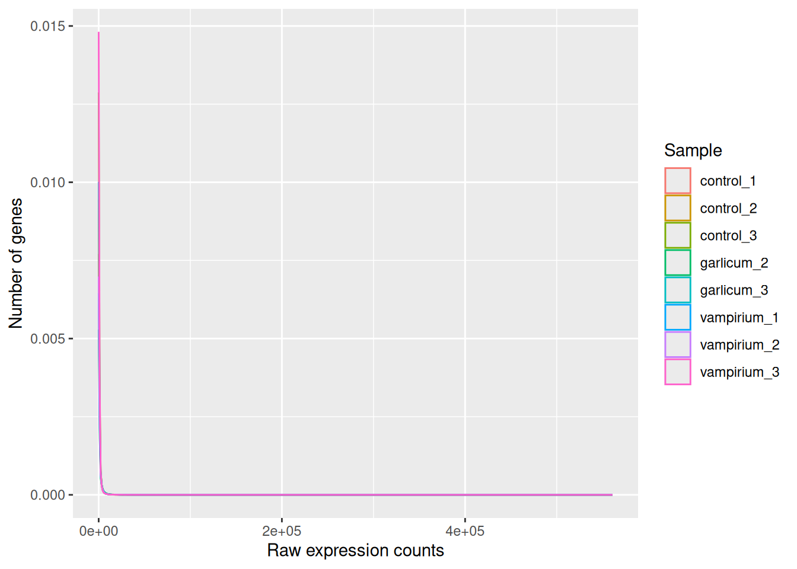

library(tidyverse)
library(DESeq2)
library(tximport)
# And with this last line of code, we set our working directory to the folder with this notebook.
# This way, the relative paths will work without issuesThe RNAseq count matrix
Approximate time: 20 minutes
Learning Objectives
- Load and create a count matrix from our preprocessing analysis using Salmon
- Explain why negative binomial distribution is used to model RNA-seq count data
Loading libraries
For this analysis we will be using several R packages, some which have been installed from CRAN and others from Bioconductor. To use these packages (and the functions contained within them), we need to load the libraries.
Loading data
The directories of output from the mapping/quantification step of the workflow (Salmon) is the data that we will be using. These transcript abundance estimates, often referred to as ‘pseudocounts’, will be the starting point for our differential gene expression analysis. The main output of Salmon is a quant.sf file, and we have one of these for each individual sample in our dataset.
For the sake of reproducibility, we will be using the backup results from our preprocessing pipeline. You are welcome to use your own results!
# Tabulated separated files can be opened using the read_table() function.
read_table("../Data/salmon/control_1/quant.sf") %>% head()For each transcript that was assayed in the reference, we have:
- The transcript identifier
- The transcript length (in bp)
- The effective length (described in detail below)
- TPM (transcripts per million), which is computed using the effective length
- The estimated read count (‘pseudocount’)
What exactly is the effective length?
The sequence composition of a transcript affects how many reads are sampled from it. While two transcripts might be of identical actual length, depending on the sequence composition we are more likely to generate fragments from one versus the other. The transcript that has a higer likelihood of being sampled, will end up with the larger effective length. The effective length is transcript length which has been “corrected” to include factors due to sequence-specific and GC biases.
We will be using the R Bioconductor package tximport to prepare the quant.sf files for DESeq2. The first thing we need to do is create a variable that contains the paths to each of our quant.sf files. Then we will add names to our quant files which will allow us to easily distinguish between samples in the final output matrix.
We will use the samplesheet.csv file that we use to process our raw reads, since it already contains all the information we need to run our analysis.
# Load metadata
meta <- read_csv("../Data/samplesheet.csv")
# View metadata
metaUsing the samples column, we can create all the paths needed:
# Directory where salmon files are. You can change this path to the results of your own analysis
dir <- "../Data/salmon"
# List all directories containing quant.sf files using the samplename column of metadata
files <- file.path(dir, meta$sample, "quant.sf")
# Name the file list with the samplenames
names(files) <- meta$sample
files control_3 control_2
"../Data/salmon/control_3/quant.sf" "../Data/salmon/control_2/quant.sf"
control_1 vampirium_3
"../Data/salmon/control_1/quant.sf" "../Data/salmon/vampirium_3/quant.sf"
vampirium_2 vampirium_1
"../Data/salmon/vampirium_2/quant.sf" "../Data/salmon/vampirium_1/quant.sf"
garlicum_3 garlicum_2
"../Data/salmon/garlicum_3/quant.sf" "../Data/salmon/garlicum_2/quant.sf" Our Salmon files were generated with transcript sequences listed by Ensembl IDs, but tximport needs to know which genes these transcripts came from. We will use annotation table the that was created in our workflow, called tx2gene.txt.
tx2gene <- read_table("../Data/salmon/salmon_tx2gene.tsv", col_names = c("transcript_ID","gene_ID","gene_symbol"))
tx2gene %>% head()tx2gene is a three-column data frame linking transcript ID (column 1) to gene ID (column 2) to gene symbol (column 3). We will take the first two columns as input to tximport. The column names are not relevant, but the column order is (i.e transcript ID must be first).
Now we are ready to run tximport. The tximport() function imports transcript-level estimates from various external software (e.g. Salmon, Kallisto) and summarizes to the gene-level (default) or outputs transcript-level matrices. There are optional arguments to use the abundance estimates as they appear in the quant.sf files or to calculate alternative values.
For our analysis we need non-normalized or “raw” count estimates at the gene-level for performing DESeq2 analysis.
Since the gene-level count matrix is a default (txOut=FALSE) there is only one additional argument for us to modify to specify how to obtain our “raw” count values. The options for countsFromAbundance are as follows:
no(default): This will take the values in TPM (as our scaled values) and NumReads (as our “raw” counts) columns, and collapse it down to the gene-level.scaledTPM: This is taking the TPM scaled up to library size as our “raw” countslengthScaledTPM: This is used to generate the “raw” count table from the TPM (rather than summarizing the NumReads column). “Raw” count values are generated by using the TPM value x featureLength x library size. These represent quantities that are on the same scale as original counts, except no longer correlated with transcript length across samples. We will use this option for DESeq2 downstream analysis.
An additional argument for tximport: When performing your own analysis you may find that the reference transcriptome file you obtain from Ensembl will have version numbers included on your identifiers (i.e ENSG00000265439.2). This will cause a discrepancy with the tx2gene file since the annotation databases don’t usually contain version numbers (i.e ENSG00000265439). To get around this issue you can use the argument ignoreTxVersion = TRUE. The logical value indicates whether to split the tx id on the ‘.’ character to remove version information, for easier matching.
txi <- tximport(files, type="salmon", tx2gene=tx2gene, countsFromAbundance = "lengthScaledTPM", ignoreTxVersion = TRUE)Viewing data
The txi object is a simple list containing matrices of the abundance, counts, length. Another list element ‘countsFromAbundance’ carries through the character argument used in the tximport call. The length matrix contains the average transcript length for each gene which can be used as an offset for gene-level analysis.
attributes(txi)$names
[1] "abundance" "counts" "length"
[4] "countsFromAbundance"We will be using the txi object as is for input into DESeq2, but will save it until the next lesson. For now let’s take a look at the count matrix. You will notice that there are decimal values, so let’s round to the nearest whole number and convert it into a dataframe. We will save it to a variable called data that we can play with.
# Look at the counts
txi$counts %>% head() control_3 control_2 control_1 vampirium_3 vampirium_2
ENSG00000000005 23.73123 28.439224 27.6076274 21.64963 37.58783
ENSG00000000419 1009.27099 1421.230337 1633.8368895 1310.99003 1895.90678
ENSG00000000457 341.15729 400.448044 525.1262233 341.87963 583.67850
ENSG00000000938 0.00000 1.051365 1.0534302 0.00000 0.00000
ENSG00000000971 9.73718 21.246741 0.9349943 4.29848 22.14522
ENSG00000001036 1887.04974 2549.889400 3078.0911145 1658.75260 2849.69853
vampirium_1 garlicum_3 garlicum_2
ENSG00000000005 23.5275693 13.30819 33.656497
ENSG00000000419 2107.7881582 1483.81817 2544.206786
ENSG00000000457 629.8318121 548.58951 919.967120
ENSG00000000938 0.0000000 0.00000 1.791226
ENSG00000000971 0.5082626 2.01232 4.312574
ENSG00000001036 3012.8098871 2624.21407 4352.957839# Write the counts to an object
data <- txi$counts %>%
round() %>%
data.frame()There are a lot of rows with no gene expression at all.
sum(rowSums(data) == 0)[1] 22144Let’s take them out.
keep <- rowSums(data) > 0
data <- data[keep,]RNA-seq count distribution
To determine the appropriate statistical model, we need information about the distribution of counts. To get an idea about how RNA-seq counts are distributed, let’s plot the counts of all the samples:
# Here we format the data into long format instead of wide format
pdata <- data %>%
gather(key = Sample, value = Count)
head(pdata)And we plot our count distribution using all our samples:
ggplot(pdata) +
geom_density(aes(x = Count, color = Sample)) +
xlab("Raw expression counts") +
ylab("Number of genes")
If we zoom in close to zero, we can see a large number of genes with counts close to zero:
ggplot(pdata) +
geom_density(aes(x = Count, color = Sample)) +
xlim(-5, 500) +
xlab("Raw expression counts") +
ylab("Number of genes")
These images illustrate some common features of RNA-seq count data, including a low number of counts associated with a large proportion of genes, and a long right tail due to the lack of any upper limit for expression. Unlike microarray data, which has a dynamic range maximum limited due to when the probes max out, there is no limit of maximum expression for RNA-seq data. Due to the differences in these technologies, the statistical models used to fit the data are different between the two methods.
Modeling count data
RNAseq count data can be modeled using a Poisson distribution. this particular distribution is fitting for data where the number of cases is very large but the probability of an event occurring is very small. To give you an example, think of the lottery: many people buy lottery tickets (high number of cases), but only very few win (the probability of the event is small).
With RNA-Seq data, a very large number of RNAs are represented and the probability of pulling out a particular transcript is very small. Thus, it would be an appropriate situation to use the Poisson distribution. However, a unique property of this distribution is that the mean == variance. Realistically, with RNA-Seq data there is always some biological variation present across the replicates (within a sample class). Genes with larger average expression levels will tend to have larger observed variances across replicates.
The model that fits best, given this type of variability observed for replicates, is the Negative Binomial (NB) model. Essentially, the NB model is a good approximation for data where the mean < variance, as is the case with RNA-Seq count data.
Here we calculate the mean and the variance per gene for all columns and genes:
means <- rowMeans(data, na.rm = TRUE)
variances <- rowVars(as.matrix(data), na.rm = TRUE)
# Create a new dataframe 'df' to store the results
df <- data.frame(rownames = rownames(data), mean_counts = means, variance_counts = variances)Run the following code to plot the mean versus variance of each gene for our data:
ggplot(df) +
geom_point(aes(x=mean_counts, y=variance_counts)) +
geom_abline(intercept = 0, slope = 1, color="red") +
scale_y_log10() +
scale_x_log10()
If the mean would be equal to the variance, the cloud of points would follow the straight red line.